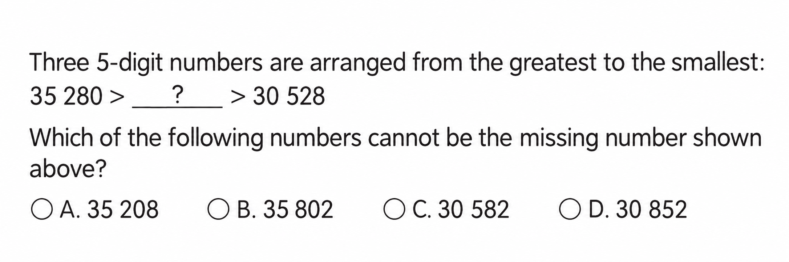
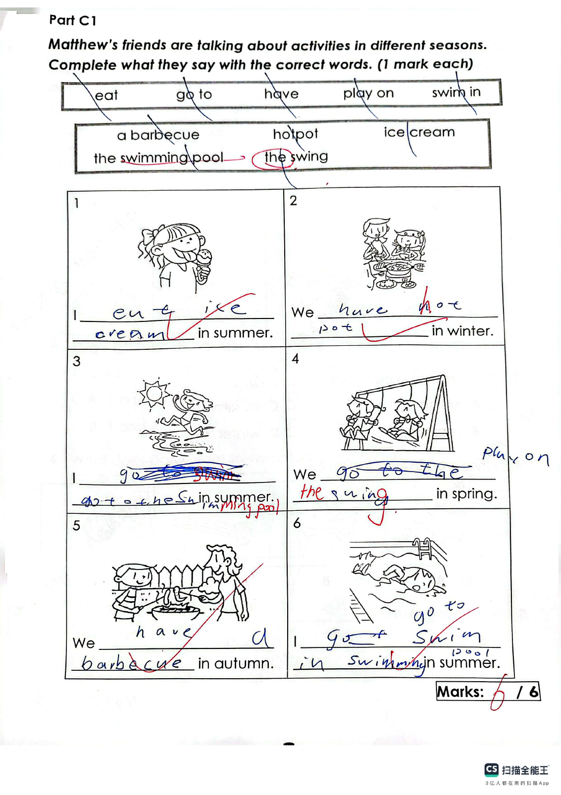
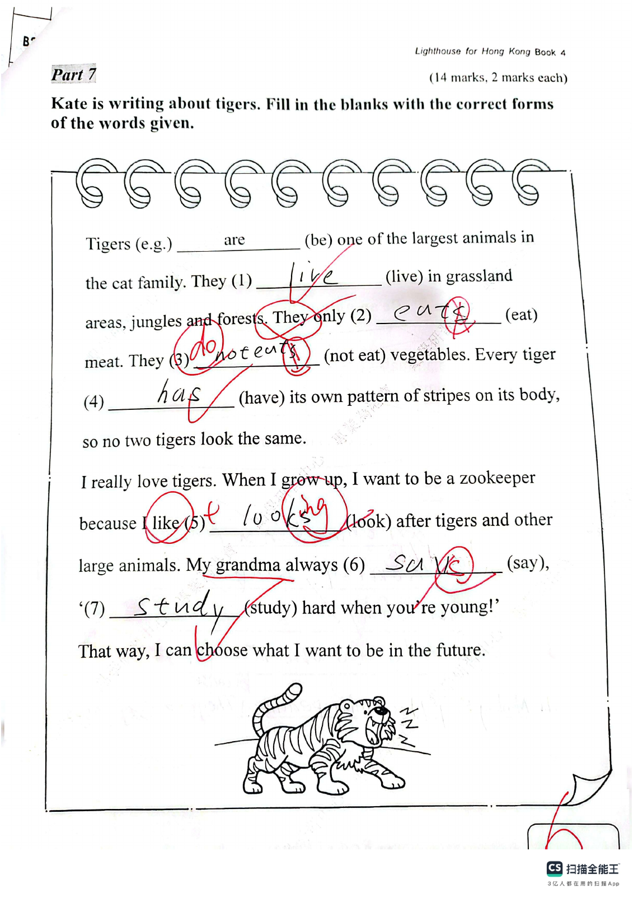
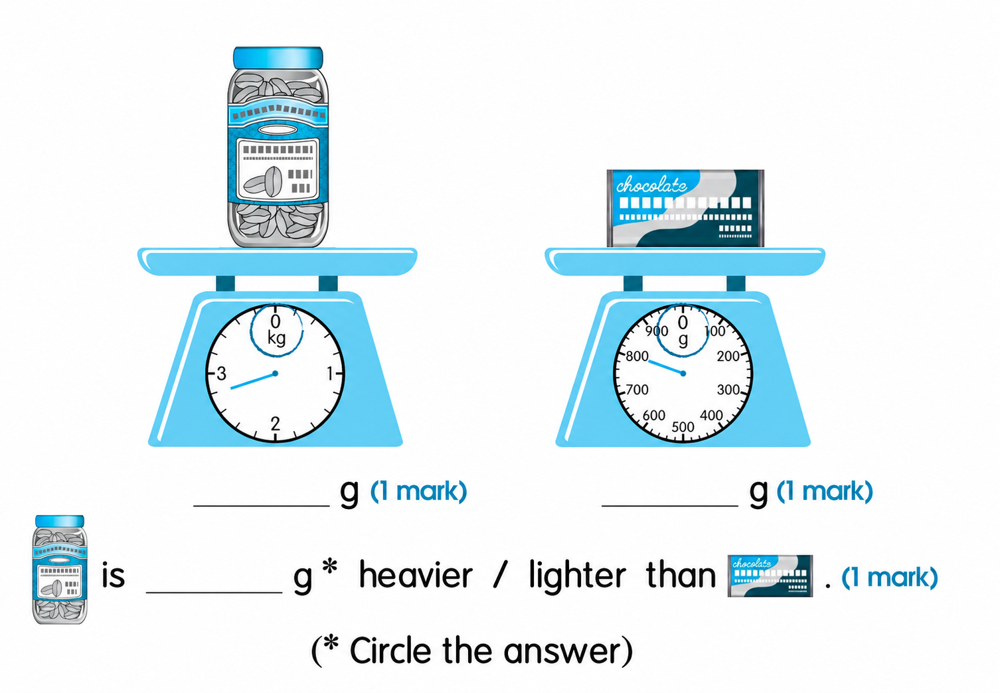
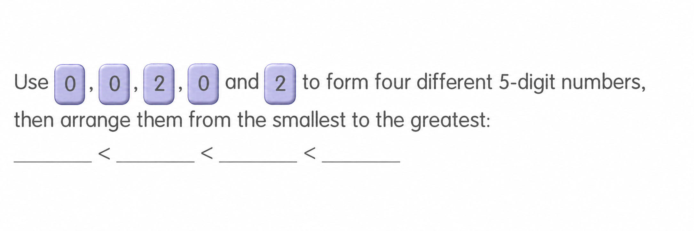

Answer: B. 35 802
已掌握
| # | 单词/词组 | 中文意思 | 例句/说明 | 已掌握 |
|---|---|---|---|---|
| noun 名词 | ||||
| 1 | gift | 礼物 | I got a gift. | |
| 2 | musical | 音乐剧 | We watched a musical at school. | |
| 3 | Friday | 周五 | The school trip is on Friday. | |
| 4 | role | 角色 | I have a role in the play. | |
| 5 | doctor | 医生 | The doctor checked my temperature. | |
| 6 | shopkeeper | 售货员 | The shopkeeper helped me find a notebook. | |
| 7 | poem | 诗歌 | Read the poem. | |
| verb 动词 | ||||
| 8 | dig | 挖 | The dog can dig a hole. | |
| 9 | locate | 定位 | We can locate the place on the map. | |
| 10 | carry | 带有/搬运 | I carry my bag. | |
| preposition 介词 | ||||
| 11 | across | 穿过；横跨 | We walk across the road. | |
| phrase 短语 | ||||
| 12 | turn left | 左转 | Turn left at the corner. | |
| 13 | organize the bookshelf | 整理书架 | Let's organize the bookshelf after school. | |
| adjective 形容词 | ||||
| 14 | impolite | 不礼貌的 | It is impolite to shout. | |
| 15 | helpful | 有帮助的 | This map is helpful. | |
| verb phrase 动词短语 | ||||
| 16 | cheer sb. up | 使某人振作起来 | A funny story can cheer him up. | |
| 17 | tell a story | 讲故事 | I tell a story to my little brother. | |
| adverb 副词 | ||||
| 18 | never | 从不 | I never run across the road. | |
| verb 动词 | ||||
| 19 | win | 赢得 | Our team hopes to win the match. | |
| noun 名词 | ||||
| 20 | supermarket | 超市 | We buy food at the supermarket. | |
| # | 单词/词组 | 中文意思 | 例句/说明 | 已掌握 |
|---|---|---|---|---|
| adjective 形容词 | ||||
| 1 | true | 正确的 | The sentence is true. | |
| 2 | careless | 粗心的；不小心的 | A careless mouse ran across the lion's paw. | |
| 3 | poor | 贫穷的 | Once upon a time there was a poor man called Billy. | |
| 4 | festive | 节日的 | They can also try different festive food such as turkey and Christmas pudding. | |
| 5 | heavy | 重的 | How heavy is the cow? | |
| noun 名词 | ||||
| 6 | stationery | 文具 | I put my stationery in my bag. | |
| 7 | turtle | 乌龟 | A turtle walks slowly. | |
| 8 | parrot | 鹦鹉 | The parrot can talk. | |
| 9 | title | 标题 | Please write a title for the story. | |
| 10 | kilogram | 千克 | The bag weighs one kilogram. | |
| 11 | farm | 农场 | Ben wants to go to the farm. | |
| noun phrase 名词短语 | ||||
| 12 | a card | 卡片 | My brother gave me a card. | |
| verb 动词 | ||||
| 13 | wrap | 包装 | Please wrap the present in paper. | |
| 14 | put | 放；放置 | Please put the vegetables into the pot. | |
| 15 | contact | 联系 | Please contact the class teacher if you have any questions. | |
| phrase 短语 | ||||
| 16 | step on | 踩到 | Be careful not to step on the flowers. | |
| 17 | reading comprehension | 阅读理解 | We practise reading comprehension at school. | |
| 18 | from day to night | 从早到晚 | They always work from day to night. | |
| verb phrase 动词短语 | ||||
| 19 | cheer sb. up | 使某人开心 | I tell Tom a joke to cheer him up. | |
| 20 | play football | 踢足球 | I play football every Saturday morning. | |
| 21 | play basketball | 打篮球 | Can you play basketball? Yes, I can. | |
| 22 | make models | 制作模型 | I can make models but I can't make paper toys. | |
| 23 | watching TV | 看电视 | He likes watching TV. | |
| 24 | watch a film | 看电影 | We watch a film at the cinema. | |
| 25 | look at the Christmas lights | 看圣诞灯饰 | We look at the Christmas lights together. | |
| 26 | pick up | 捡起，拾起 | We go to the beach and pick up the rubbish. | |
| noun 名词 | ||||
| 27 | cartoon | 卡通 | We watched a funny cartoon. | |
| 28 | campsite | 营地 | We put up our tent at the campsite. | |
| interrogative pronoun 疑问代词 | ||||
| 29 | who | 谁 | Who gives the dog a bath every week? | |
| interrogative adverb 疑问副词 | ||||
| 30 | when | 什么时候 | When is your birthday, Winnie? | |
| # | 单词/词组 | 中文意思 | 例句/说明 | 已掌握 |
|---|---|---|---|---|
| time/date 时间日期 | ||||
| 1 | March | 三月 | March is the third month. | |
| 2 | August | 八月 | August is the eighth month. | |
| time unit 时间单位 | ||||
| 3 | month | 月 | A month has many days. | |
| directions 方向 | ||||
| 4 | north | 北 | North is a direction. | |
| numbers 数字 | ||||
| 5 | two | 2 | Two is 2. | |
| 6 | seven | 7 | Seven is 7. | |
| 7 | eight | 8 | Eight is 8. | |
| 8 | eighty | 80 | Eighty is 80. | |
| ordinal numbers 序数 | ||||
| 9 | first | 第一 | This is the first shape. | |
| 10 | third | 第三 | This is the third shape. | |
| solid shape 立体图形 | ||||
| 11 | triangular prism | 三棱柱 | A triangular prism has triangular faces. | |
| 12 | cone | 圆锥 | A cone has one curved face. | |
| plane shape 平面图形 | ||||
| 13 | triangle | 三角形 | A triangle has three sides. | |
| 14 | hexagon | 六边形 | A hexagon has six sides. | |
| 15 | trapezium | 梯形 | A trapezium has exactly one pair of parallel sides. | |
| # | 单词/词组 | 中文意思 | 例句/说明 | 已掌握 |
|---|---|---|---|---|
| numbers 数字 | ||||
| 1 | 3-digit number | 三位数 | A 3-digit number has three digits. | |
| geometry 几何 | ||||
| 2 | angle | 角 | An angle is formed by two rays with the same endpoint. | |
| 3 | right angle | 直角 | A right angle is 90 degrees. | |
| 4 | perpendicular | 垂直 | Perpendicular lines meet at a right angle. | |
| 5 | acute angle | 锐角 | An acute angle is smaller than a right angle. | |
| 6 | obtuse angle | 钝角 | An obtuse angle is greater than 90 degrees and less than 180 degrees. | |
| 7 | grid | 网格 | A grid helps us find positions. | |
| 8 | opposite side | 对边 | In a rectangle, the opposite sides are equal. | |
| question word 题目词 | ||||
| 9 | calculate | 计算 | Calculate the answer. | |
| 10 | backwards | 向后；倒着 | Count backwards from 20. | |
| shape 形状 | ||||
| 11 | circle | 圈；圆 | Draw a circle around the answer. | |
| comparison 比较 | ||||
| 12 | less | 更少的；小于 | 8 is less than 10. | |
| 13 | more | 更多 | 8 is more than 5. | |
| 14 | fewest | 最少的 | Which group has the fewest? | |
| position 位置 | ||||
| 15 | behind | 后面 | The bag is behind the chair. | |
| 16 | back | 后面 | The desk is at the back of the room. | |
| 17 | arrow | 箭头 | The arrow points to the right. | |
| operations calculation 运算 | ||||
| 18 | quotient | 商 | The quotient is the answer in division. | |
| 19 | horizontal form | 横式形式 | Write it in horizontal form. | |
| teacher math vocabulary 老师数学词汇 | ||||
| 20 | each | 每个 | Each child has three pencils. | |
| currency money 货币 | ||||
| 21 | expensive | 昂贵的 | This toy costs $50. It is more expensive than the $20 toy. | |
| measurement 测量 | ||||
| 22 | metre | 米 | A metre is 100 centimetres. | |
| 23 | distance | 距离 | Find the distance between the two points. | |
| geometry tool 几何工具 | ||||
| 24 | geo-strip | 几何条 | A geo-strip can help make shapes. | |
| 句型结构 | ||||
| 25 | Angle ... is smaller than Angle ... | 角......小于角...... | Angle A is smaller than Angle B. | |
| 26 | Angle ... is the smallest. | 角......是最小的。 | Angle B is the smallest. | |
| 27 | The lines are perpendicular to each other. | 这些线彼此垂直。 | The lines are perpendicular to each other. | |
| plane shape 平面图形 | ||||
| 28 | upper base | 上底 | The upper base of this trapezium is 4 cm long. | |
| 29 | leg | 腰（梯形的非平行边） | A leg of a trapezium is a non-parallel side. | |
| 30 | isosceles trapezium | 等腰梯形 | An isosceles trapezium has two equal legs. | |




